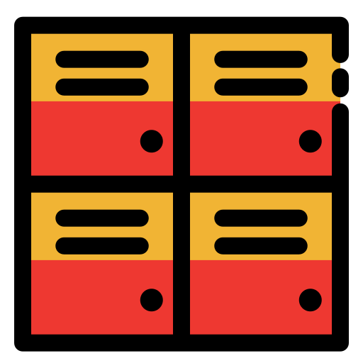

Passo 1: Cadastrar
Crie uma conta no sistema Est'Aki.

Passo 2: Escolher
Selecione um cacifo próximo da sua localização e escolha o tamanho.

Passo 3: Retirar
Receba o código de acesso, vá até o cacifo e retire a sua encomenda!